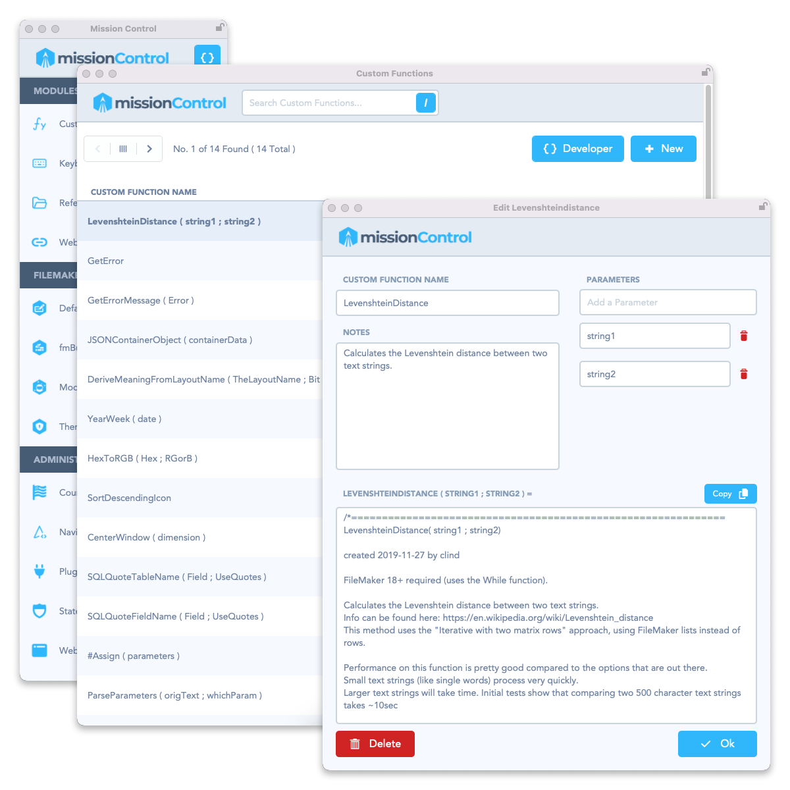
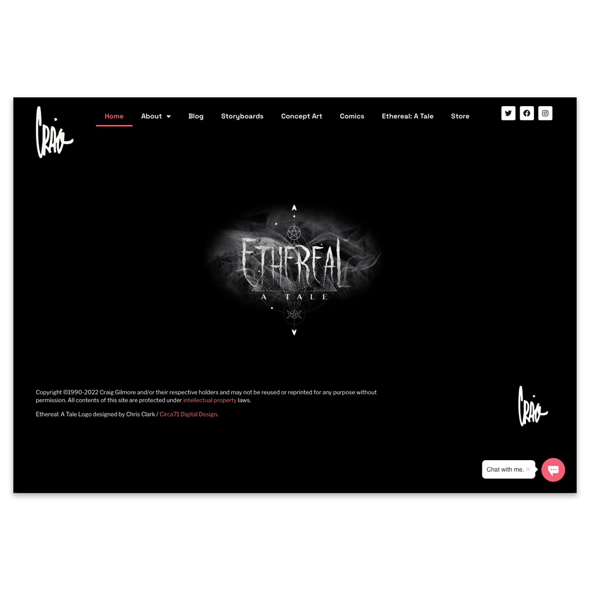
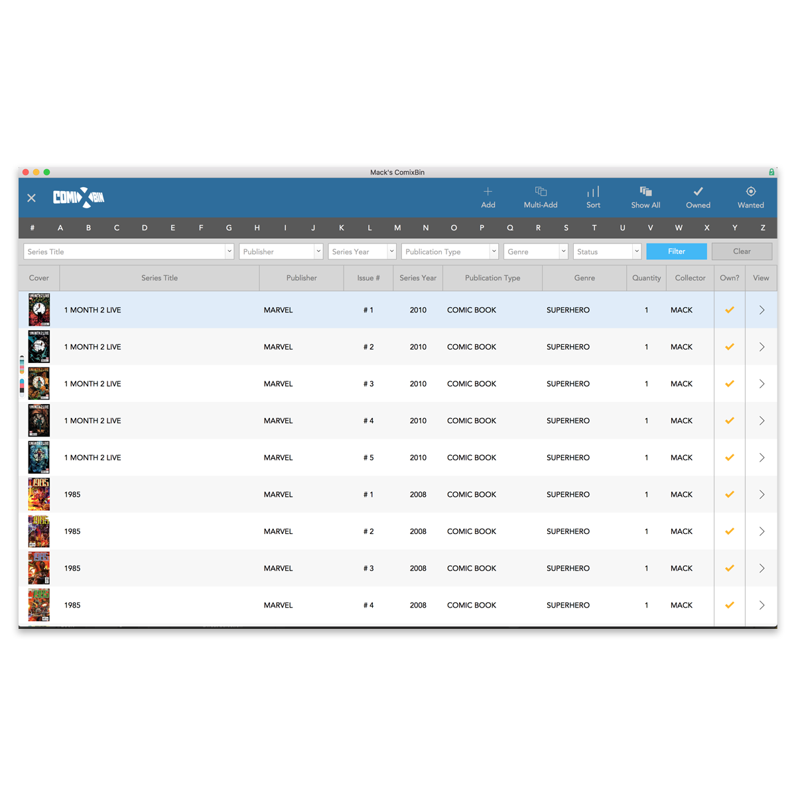

Work Experience
Software Engineer
Catalyst MedTech
▶
Software Engineer
Catalyst MedTech
- Work as part of a development team to extend and improve the company's internal operations application (O.T.I.S.) built on the Claris platform.
- Build integrations between O.T.I.S. and other productivity systems, such as Microsoft Teams and Power BI.
Senior Software Developer
Diamond Assets
▶
Senior Software Developer
Diamond Assets
- Worked to extend and improve the company's internal Claris FileMaker applications.
- Created API integrations to connect FileMaker to Salesforce, FedEx, UPS, and NetSuite.
Solutions Architect
LuminFire
▶
Solutions Architect
LuminFire
- Worked directly with clients to build FileMaker solutions, either from scratch or using the BrilliantHub suite of applications.
- Wrote technical articles for the LuminFire website to further the company's marketing efforts.
- Worked on the BrilliantHub and BrilliantConnect application teams to continuously improve performance and add new features.
- Acted as Scrum Master for the FileMaker Development Team to help balance developer workloads with Agile Development targets.
Application Developer
Codence
▶
Application Developer
Codence
- Worked as a member of several project teams to improve the performance and reliability of client FileMaker solutions.
- Wrote technical articles for the Codence website to further the company's marketing efforts.
IT Operations Manager
IF Group, LLC
▶
IT Operations Manager
IF Group, LLC
- Designed, coded, and managed the Bariatric Eating e-commerce website.
- Developed internal applications using Claris FileMaker which improved efficiency among remote employees working in the United States, Canada, and Australia.
- Implemented integrations between the e-commerce website, external services, and multiple social media platforms.
- Developed and integrated a mobile application with the e-commerce website.
Web Developer
Purchase Clinic
▶
Web Developer
Purchase Clinic
- Built and managed MySQL databases used as the data layer for the customer portal.
- Developed internal applications using Claris FileMaker used by company employees for adding and updating data.
- Integrated FileMaker apps with MySQL databases.
Application Developer
Volvo Group
▶
Application Developer
Volvo Group
- Developed new and expanded existing FileMaker applications to support business operations ranging from order/backorder management to engineering and production planning.
- Built a FileMaker reporting tool to aggregate data from multiple data silos across various tech platforms to provide a single reporting dashboard for C-level managers.
- Supported the FileMaker user base across multiple business units within Volvo Group and Mack Trucks.
Projects

Mission Control
Started as a small FileMaker app to track Custom Functions. Now a full developer hub — keyboard shortcuts, custom functions, useful websites, a theme vault, XML generator, and a development starter file.
- FileMaker Theme Vault
- Default Fields XML Generator
- Custom Functions Library
- fmBuilder Starter Solution

Craig Gilmore
Official website for professional illustrator, storyboard and comic book artist Craig Gilmore. Storyboards for major films and TV — including AMC's The Walking Dead — and comic books for Marvel and DC.
- Brand Design
- Website Design
- WordPress Development
- Hosting

Comixbin
Comic book collection management built with Claris FileMaker Pro for desktop and mobile. Multi-user, with loan tracking, wishlists, and issue gap reports.
- Multi-User Collection Management
- Collection Loan Tracking
- Wishlists
- Issue Gap Reports